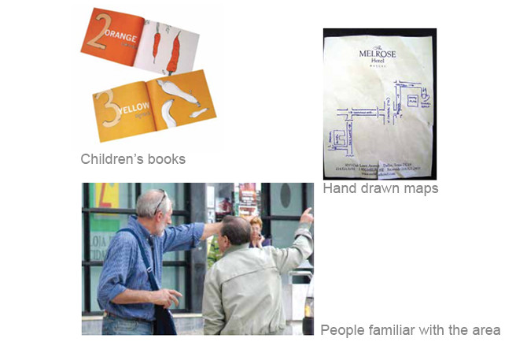

Design an interface that improves upon a current system. Navigating somewhere should be straightforward. By making improvements to the GPS system on smartphones, users can avoid unnecessary confusion when navigating from their starting point until they park and get to their destination.
I observed people navigating while driving. The task was often confusing and difficult to undertake for drivers unless another person was helping them navigate. The GPS navigation system on smartphones could be more user-centered and less confusing.
Excerpts from observation #1: Alex A.
"As soon as Alex got into the car, he asked me (as his copilot), 'Can you put it on Maps because I need to know… I kind of know where we need to go but like parking… and stuff.'”
"Something that I noticed throughout my drive with Alex was the fact that he did not use the Google Maps voice option and instead chose to look at the phone to see where he was going. This was problematic because he would look down at the phone in the cupholder and take his eyes off the road constantly."
Excerpts from observation #2: Jaime G.
“Jaime pulled over on a stop sign on Ben White and Hudson and typed in the address of a nearby apartment complex to at least be able to get to that area. Once he had mapped where he was going, he tucked his phone under his leg and didn’t look at it for a while. The voice option on Google Maps was turned off as well.”
“Coming off the highway, Jaime had to get into the right lane right away (three lanes away). His body tensed up as he looked to his right blind spot to make sure he was clear. There were lots of cars, so he slowly made his way over. He missed the turn for South Lamar (the turn is tricky and confusing because it’s a type of turn that’s angled in a way) and ended up having to turn at the light. At first he asked us if it was okay for him to turn on that street, but neither Daowz nor I knew the answer.”
“At the next stop light, he checked his phone for the first time since he started driving. He turned on the voice option on Google Maps which then started saying things like “In 500 feet, turn left on…” “In a quarter mile…”. It was difficult for Jaime to gauge his distance and since he had never been to Accent Auto before, he relied on me to get him there. I knew the area better and pointed the mental landmarks I knew and told him where to turn.”
Excerpts from observation #3: Daowz S
“As soon as Daowz got into the driver's seat, she attempted to turn the car on. After this, she adjusted her seat as best as she could but she could not figure out how to scoot her seat to move closer to the steering wheel until I helped her find the lever under her seat. After this, she tried to move the car until we figured out she had not fully put the car key in. When we had finally figured out that the key had not been fully turned on, she told me 'I'm nervous about driving other people's cars…'"
”We were already on the street when she decided to look up the Infiniti dealership that we were headed to. At a stop sign, she typed it in onto Google Maps (just like Jaime had done so previously.) After she had looked up the address, she placed her phone in the cupholder (just like Alex had done so previously). Daowz however, chose to look at her phone’s map screen by picking her phone up and placing it near her line of sight instead of looking down at it in her cupholder. Daowz prefers to keep her eyes on the road whilst looking at her phone.”
“Google Maps voice option is on at all times.”
“I noticed she chose to take a longer road instead of a shorter one because it was safer. (The shorter road would've included U-turns and dangerous turns that would've also included turning into a middle lane in order to turn in the right direction.)”
“After we were on the highway for quite some time, we needed to get off. She was confused as to when to when to get off the highway and said "wait...so do I…?" and then she grabbed her phone to look. At times, she needed some encouragement as to when to take a turn or go ahead and go.”
Words that relate to my design idea:
• Humanistic • Language • Navigation • Reliable • Easy • Intuitive • Informative
Apart from Google Maps, GPS systems, ways of navigating nowadays on smartphones, I chose a couple of non-traditional inspiration ideas as well...
GPS systems don't help much when trying to gauge the distance between turns/locations/etc, often saying things like, "In 500 feet, turn left". A person, on the other hand, translates this into clearer instructions, such as "turn left after the red building" or "turn right at the next light". Additionally, GPS systems are limited when a driver doesn't know if what they are doing is correct (such as making a U-turn or parking in certain places.) Stripping down unnecessary information by using filters and more user friendly language will help the driver avoid all of this confusion and anxiety while driving.
Viewpoint
Driving can become an intimidating task to a lot of people; navigating somewhere (especially
unknown areas) should be straightforward. By stripping down unnecessary information and using
more humanistic language on GPS navigation systems on smartphones, users can avoid confusion
when navigating from point A to point B. Hand drawn maps contain only essential information,
simple terms and landmarks- this is where I drew my main inspiration from.
Participants
My three participants will be friends/colleagues who have cars that tend to use their smartphone as
a GPS to get around the city.
Informed Consent
I provided every user an informed consent sheet and had them sign and return it to me stating that their results will be used to improve upon my design.
Plan
Time Period: Usability tests will be performed between August 15-August 24th. I will use 3 different time periods of the day for each participant. Participants will be randomly selected, one will perform the test at 10 am, one at 3 pm, and one at 7 pm.
Test length: Each test will last around 10 minutes.
Location: The users will all perform the usability tests while driving their car. I will ask the driver to perform the taasks as they usually would whilst driving/navigating somewhere. I will pick a nearby neighborhood that is relatively free of traffic to make this as safe and realistic and possible.
Test Steps
Tasks
User 1
Task 1: Click on where you can find more information on what the option “Map Style” means.
User clicks on the “i” correctly, and starts the first screen just fine. He chooses to click to navigate
before driving.
Task 2: Click on where you can find more information on what the option “Navigate By” means.
User clicks on the “i” correctly, and starts the first screen just fine.
Task 3: Press the navigation button in order to navigate to a location.
User does this just fine.
Task 4: Change your settings to GPS style. Get back to full navigation screen.
User mostly does this just fine BUT has trouble getting back to full navigation screen. Instead of
clicking on the hamburger button again to get back to main screen, user attemps to click on
the screen. This was something that I had doubts about at first, and this just confirms my
doubts about users having trouble gettting back to main navigation screen after selecting
their options. The app, however, helped him by “glowing” the options available after he
unsuccessfully tried to click on the hamburger to go back to main screen.
Task 5: Exit out of the navigation and back to home screen.
User does this just fine and goes back to home screen.
User 1’s additional comments/feedback
“At first, I thought the hamburger would give you more GPS options, such as “avoid toll roads” or stuff
like that. Maybe you should try to get rid of the hand drawn option because it seems unnecssary
to just have an option where it’s just essentially a GPS but drawn out. The point of hand drawn
maps is the landmarks aspect of it, which is already an option.”
“It’d be cool if you could customize the colors to your preference as well.”
User 2
Task 1: Click on where you can find more information on what the option “Map Style” means.
User clicks on the “i”. Comments on the fact that the information to read is too small.
Task 2: Click on where you can find more information on what the option “Navigate By” means.
User clicks on the “i” correctly, and continues to next task.
Task 3: Press the navigation button in order to navigate to a location.
User does this just fine.
Task 4: Change your settings to GPS style. Get back to full navigation screen.
User takes longer to do this than with all the other tasks. Most other tasks seemed almost automatic
compared to this one.
Task 5: Exit out of the navigation and back to home screen.
User goes back to home screen like normal.
User 2’s additional comments/feedback
“I felt like the icon for changing your settings is good, but I didn’t know what to expect on the next
screen. Like maybe I thought there’d be a way to change form it giving you the distance in miles
instead of minutes? So maybe instead of 5 minutes away, it says 1 mile away?”
“Also you might want to rethink the part where you get back to the navigation screen because in order
to do that, you have to hit the icon again insetad of clicking the screen, which I don’t know if most
people would get that right.”
User 3
Task 1: Click on where you can find more information on what the option “Map Style” means.
User clicks on the “i” correctly.
Task 2: Click on where you can find more information on what the option “Navigate By” means.
User clicks on the “i” correctly.
Task 3: Press the navigation button in order to navigate to a location.
User does this just fine.
Task 4: Change your settings to GPS style. Get back to full navigation screen.
User clicks on hamburger button, changes the GPS style, and to get back to main screen w/ no options,
clicks on the hamburger.
Task 5: Exit out of the navigation and back to home screen.
User goes back to home screen like normal.
User 3’s additional comments/feedback
“I would use it and stick not with hand drawn maps just because it’s a lot of work, but the land marks
option is a really good idea. You could maybe even get companies to sponsor you to put their
business as a more prominent landmark or whatever. You can also visualize landmarks
so much better than regular streets, so I think this is a good option in terms of like, how people think.”
“You should also do like an option of the GPS telling you to “turn after this street” so you’re not trying to
turn on that street but on the next upcoming street. It’d be exactly like Google Maps, but a turn
before, not turn at option.
GPS systems don't help much when trying to gauge the distance between turns/locations/etc, often saying things like, "In 500 feet, turn left". A person, on the other hand, translates this into clearer instructions, such as "turn left after the red building" or "turn right at the next light". Additionally, GPS systems are limited when a driver doesn't know if what they are doing is correct (such as making a U-turn or parking in certain places.) Stripping down unnecessary information by using filters and more user friendly language will help the driver avoid all of this confusion and anxiety while driving.